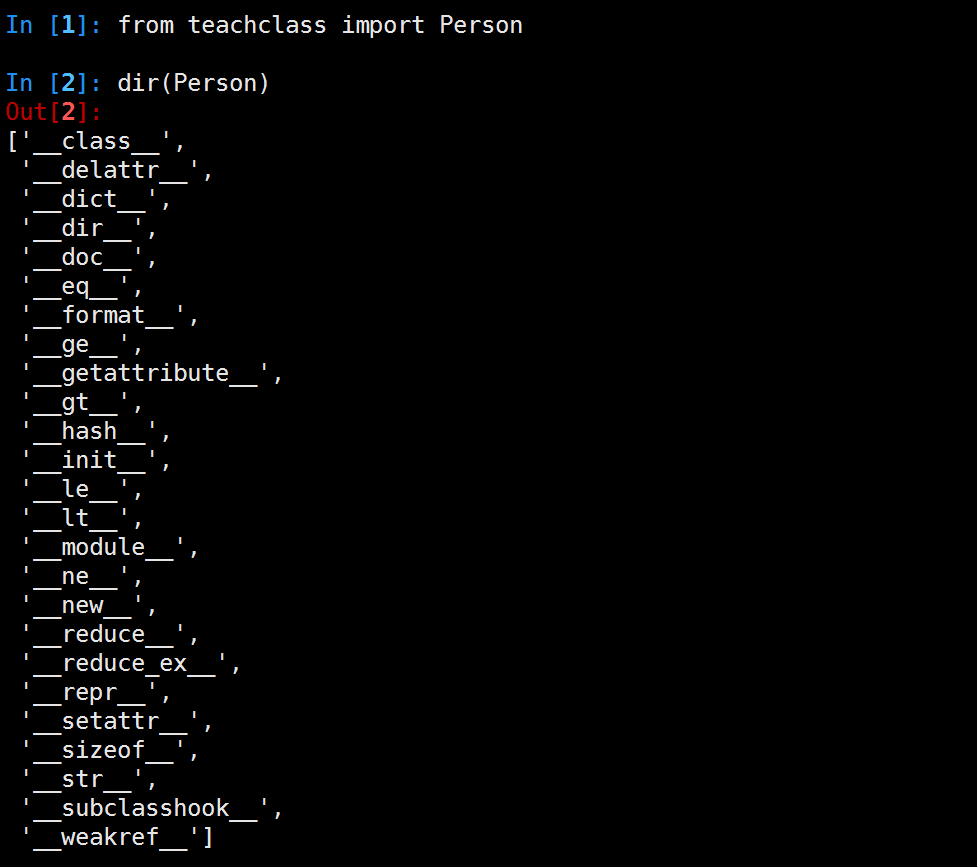
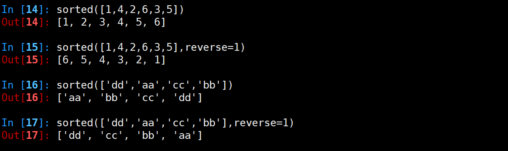

内建属性
"teachclass.py"
class Person(object):
pass
python3.5中类的内建属性和方法

经典类(旧式类),早期如果没有要继承的父类,继承里空着不写的类
#py2中无继承父类，称之经典类,py3中已默认继承object
class Person:
pass
子类没有实现__init__方法时，默认自动调用父类的。 如定义__init__方法时，需自己手动调用父类的__init__方法
| 常用专有属性 | 说明 | 触发方式 |
|---|---|---|
__init__ |
构造初始化函数 | 创建实例后,赋值时使用,在__new__后 |
__new__ |
生成实例所需属性 | 创建实例时 |
__class__ |
实例所在的类 | 实例.__class__ |
__str__ |
实例字符串表示,可读性 | print(类实例),如没实现，使用repr结果 |
__repr__ |
实例字符串表示,准确性 | 类实例 回车 或者 print(repr(类实例)) |
__del__ |
析构 | del删除实例 |
__dict__ |
实例自定义属性 | vars(实例.__dict__) |
__doc__ |
类文档,子类不继承 | help(类或实例) |
__getattribute__ |
属性访问拦截器 | 访问实例属性时 |
__bases__ |
类的所有父类构成元素 | 类名.__bases__ |
__getattribute__例子:
class Itcast(object):
def __init__(self,subject1):
self.subject1 = subject1
self.subject2 = 'cpp'
#属性访问时拦截器，打log
def __getattribute__(self,obj):
if obj == 'subject1':
print('log subject1')
return 'redirect python'
else: #测试时注释掉这2行，将找不到subject2
return object.__getattribute__(self,obj)
def show(self):
print('this is Itcast')
s = Itcast("python")
print(s.subject1)
print(s.subject2)
运行结果:
log subject1
redirect python
cpp
__getattribute__的坑
class Person(object):
def __getattribute__(self,obj):
print("---test---")
if obj.startswith("a"):
return "hahha"
else:
return self.test
def test(self):
print("heihei")
t.Person()
t.a #返回hahha
t.b #会让程序死掉
#原因是：当t.b执行时，会调用Person类中定义的__getattribute__方法，但是在这个方法的执行过程中
#if条件不满足，所以 程序执行else里面的代码，即return self.test 问题就在这，因为return 需要把
#self.test的值返回，那么首先要获取self.test的值，因为self此时就是t这个对象，所以self.test就是
#t.test 此时要获取t这个对象的test属性，那么就会跳转到__getattribute__方法去执行，即此时产
#生了递归调用，由于这个递归过程中 没有判断什么时候推出，所以这个程序会永无休止的运行下去，又因为
#每次调用函数，就需要保存一些数据，那么随着调用的次数越来越多，最终内存吃光，所以程序 崩溃
#
# 注意：以后不要在__getattribute__方法中调用self.xxxx
内建函数
Build-in Function,启动python解释器，输入dir(__builtins__), 可以看到很多python解释器启动后默认加载的属性和函数，这些函数称之为内建函数， 这些函数因为在编程时使用较多，cpython解释器用c语言实现了这些函数，启动解释器 时默认加载。
这些函数数量众多，不宜记忆，开发时不是都用到的，待用到时再help(function), 查看如何使用，或结合百度查询即可，在这里介绍些常用的内建函数。
range
range(stop) -> list of integers
range(start, stop[, step]) -> list of integers
- start:计数从start开始。默认是从0开始。例如range（5）等价于range（0， 5）;
- stop:到stop结束，但不包括stop.例如：range（0， 5） 是[0, 1, 2, 3, 4]没有5
- step:每次跳跃的间距，默认为1。例如：range（0， 5） 等价于 range(0, 5, 1)
python2中range返回列表，python3中range返回一个迭代值。如果想得到列表,可通过list函数
a = range(5)
list(a)
创建列表的另外一种方法
In [21]: testList = [x+2 for x in range(5)]
In [22]: testList
Out[22]: [2, 3, 4, 5, 6]
map函数
map函数会根据提供的函数对指定序列做映射
map(...)
map(function, sequence[, sequence, ...]) -> list
- function:是一个函数
- sequence:是一个或多个序列,取决于function需要几个参数
- 返回值是一个list
参数序列中的每一个元素分别调用function函数，返回包含每次function函数返回值的list。
#函数需要一个参数
map(lambda x: x*x, [1, 2, 3])
#结果为:[1, 4, 9]
#函数需要两个参数
map(lambda x, y: x+y, [1, 2, 3], [4, 5, 6])
#结果为:[5, 7, 9]
def f1( x, y ):
return (x,y)
l1 = [ 0, 1, 2, 3, 4, 5, 6 ]
l2 = [ 'Sun', 'M', 'T', 'W', 'T', 'F', 'S' ]
l3 = map( f1, l1, l2 )
print(list(l3))
#结果为:[(0, 'Sun'), (1, 'M'), (2, 'T'), (3, 'W'), (4, 'T'), (5, 'F'), (6, 'S')]
filter函数
filter函数会对指定序列执行过滤操作
filter(...)
filter(function or None, sequence) -> list, tuple, or string
Return those items of sequence for which function(item) is true. If
function is None, return the items that are true. If sequence is a tuple
or string, return the same type, else return a list.
- function:接受一个参数，返回布尔值True或False
- sequence:序列可以是str，tuple，list
filter函数会对序列参数sequence中的每个元素调用function函数，最后返回的结果包含调用结果为True的元素。
返回值的类型和参数sequence的类型相同
filter(lambda x: x%2, [1, 2, 3, 4])
[1, 3]
filter(None, "she")
'she'
reduce函数
reduce函数，reduce函数会对参数序列中元素进行累积
reduce(...)
reduce(function, sequence[, initial]) -> value
Apply a function of two arguments cumulatively to the items of a sequence,
from left to right, so as to reduce the sequence to a single value.
For example, reduce(lambda x, y: x+y, [1, 2, 3, 4, 5]) calculates
((((1+2)+3)+4)+5). If initial is present, it is placed before the items
of the sequence in the calculation, and serves as a default when the
sequence is empty.
- function:该函数有两个参数
- sequence:序列可以是str，tuple，list
- initial:固定初始值
reduce依次从sequence中取一个元素，和上一次调用function的结果做参数再次调用function。 第一次调用function时，如果提供initial参数，会以sequence中的第一个元素和initial 作为参数调用function，否则会以序列sequence中的前两个元素做参数调用function。 注意function函数不能为None。
reduce(lambda x, y: x+y, [1,2,3,4])
10
reduce(lambda x, y: x+y, [1,2,3,4], 5)
15
reduce(lambda x, y: x+y, ['aa', 'bb', 'cc'], 'dd')
'ddaabbcc'
在Python3里,reduce函数已经被从全局名字空间里移除了, 它现在被放置在fucntools模块里用的话要先引入：
from functools import reduce
sorted函数
sorted(...)
sorted(iterable, cmp=None, key=None, reverse=False) --> new sorted list
